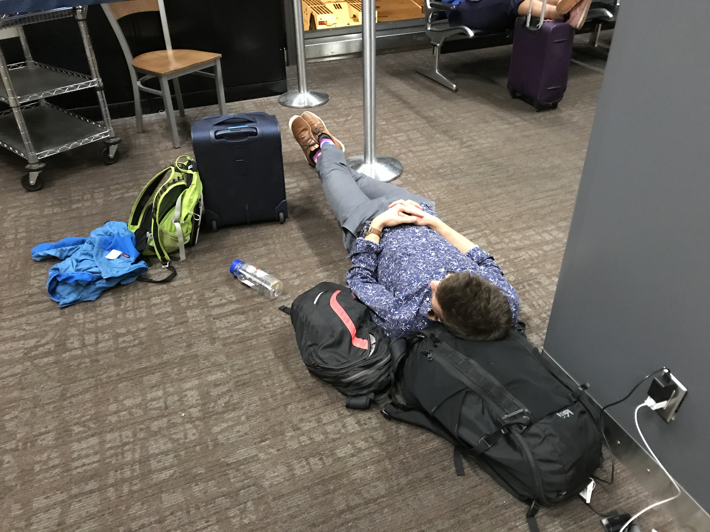

Civic Hacking Trip to Seattle
The City of Seattle flew us over to act as mentors for a Civic Hacking weekend focussed on urban accessibility for senior citizens
13 October 2017
Authors


Big Thanks
A big thanks to Candace Faber of the City of Seattle. She organized and MC'd the hackathon. Also, big thanks to our collaborators at the University of Chicago: Julia Koschinsky, Nicole Marwell, and Logan Noel.

On Sunday the 24th of September, Tim finally succeeded in his life’s ambition to get Tom to drink coffee.
The Seattle City4All Hackathon was a whirlwind experience, preceded by late nights writing code and generating data, consisting of more late nights writing code and generating data, and culminating in a celebratory beer and a red-eye flight back to Detroit. Our eyes were certainly red.

Organized by the City of Seattle, the Hackathon aimed to generate ideas to make Seattle a city that is safe and accessible for people of all ages. The event brought together local council members and stakeholders, NGOs focused on aging populations, and data and computer scientists of all ages and backgrounds. We were invited to attend to act as mentors following the recent acceptance of our paper “Evaluating urban accessibility: Leveraging open-source data and analytics to overcome existing limitations” in Environment and Planning: Urban Analytics and City Science.

The aim of our project was to develop an interactive web-based visualization to aid urban decision-makers and planners regarding how to allocate social service funding within a city. You can check this out here. Although this is a proof of concept, it is part of a wider initiative led by our collaborators at UChicago on visualizing spatial data to inform planning and help reduce inequity in access.
We were hosted by the City of Seattle in their super cool building, with light and bright rooms and great catering! The view from the balcony during the evening was awesome.
The event began with a reception and “pitching session”, where we pitched our project to the participants, with the goal being to recruit people into our team. This was an interesting experience, and somewhat similar to presenting research at a conference. With the feeling of competition in the air, we put our salesman hats on and set out to recruit the biggest and best team possible.
Our team included Henry Kendall (incidentally an IOE alumn from the 90s), Aaron Brown, Kidus Sendeke, Andy Zhu, Rock Pereira, and Yes Segura. We made for an eclectic mix of ages and backgrounds. The speed at which we had to get to know them, understand their strengths, and manage the team made our introductions and albeit brief union a special one.

We have to thank our off-site co-mentors. Nicole Marwell, School of Social Service Administration, and Julia Koschinsky (with Logan Noel), Center for Spatial Data Science at the University of Chicago. Special thanks to Julia who was and is the brains of the project and the impetus for the trip. She’s really cool.
Also, thanks to the City of Seattle for hosting us. It was an awesome experience and one we really threw ourselves into. We were exhausted by the end!
